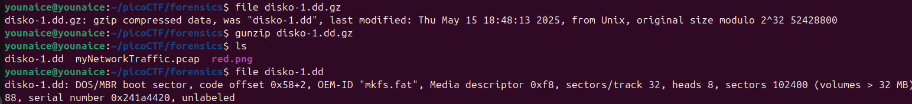
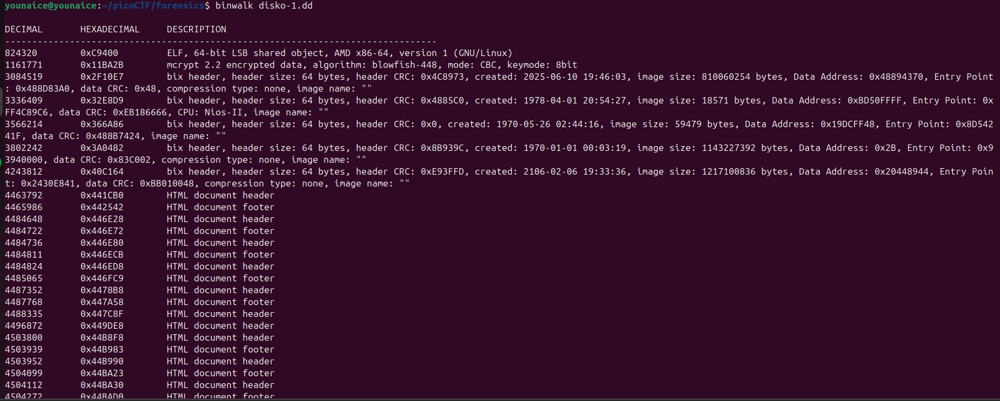
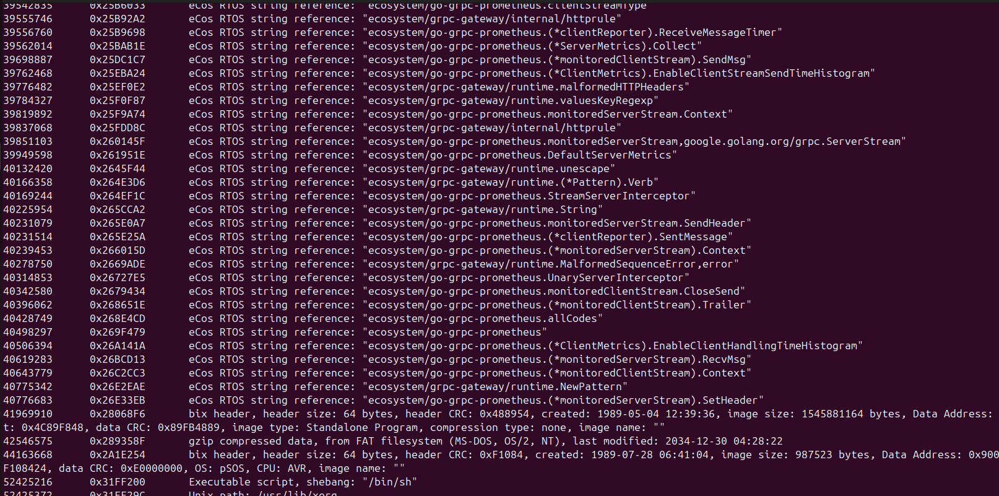
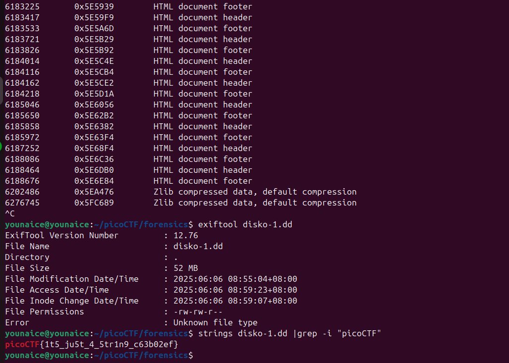

Challenge Description
Can you find the flag in this disk image? Download the disk image here.
Writeup Steps
-
First, I check the file type, the file is compressed. I decompressed it with
gunzip.I check again the file type to ensure there's no more compressed file.
-
I use
binwalkto suspect a file with embedded or concatenated file Based on the output, there's like ten or hundred thousand data, so impossible I track each of them one by one
-
Based on the output, there's a lot of documents footer. Hence, I use
Stringsto get the flagBut before using Strings, i use exiftool to check if there's any comment for this file
Flag
picoCTF{1t5_ju5t_4_5trin9_c63b02ef}Conclusion
This challenge use Strings to search the flag through the file